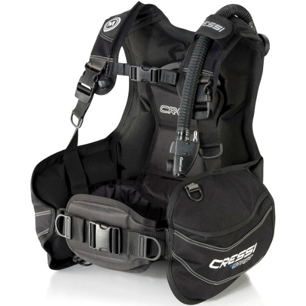

A jacket sly BCD is the most common BCD type - the classic all-in-one
It is most used by recreational divers or travelling divers. It provides maximum comfort with a reliable boyancy control. On the surface it provides a stable upright position. Most jacket style BCDs have big side pockets and integrated weights.
A back inflate offers great comfort with great stability
A back inflate BCD is basically a jacket style BCD, with the exception that the bladder is located exclusively on the back. This results in a way better stability under water and better boyancy in general, as the body is kind of pushed in a horizontal position.
The alternative combo is to assemble your BCD from scratch and pick the parts yourself. The most basic version of a backplate and wing is a solid metal (stainless stell or aluminium) backplate with a bladder (the wing) bolted to it and a harness to attach it to the divers body. Every part is bought and attached separately. Although it is not as comfortable as the above versions, it is way more modular. For example you can mount twin tanks only on a backplate+wing. Because of this and more this version is preferred by technical divers.